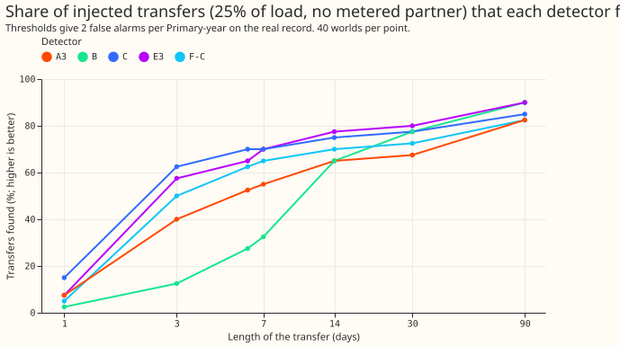
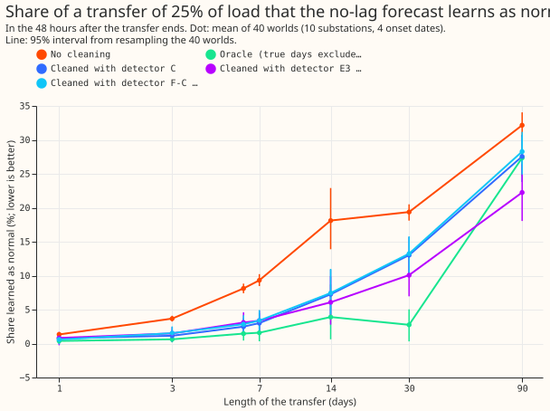

Does leaving detected load shifts out of the refit of a no-lag forecast stop it learning them as normal?
Six detectors that read the daily mean forecast error find about as many long, deep real load
shifts as LR_b20, a learned score from experiment
302, and leaving their flagged days out
of the monthly refit cuts what a 30-day transfer teaches the forecast by a third to a half, but not
to the 5% that was pre-registered. A load shift (also called a transfer) is a spell in which an
operator moves part of one Primary substation's demand onto a neighbouring Primary. Primary
substations step 33 kV down to 11 kV. We used the generalised additive forecast with no lagged power
(GAM_ONLY), refitted every month. Detectors A to C test the daily mean of its error. Detectors D to
F add a check against the neighbouring Primaries. We scored them on the real record and on transfers
that we added to the demand series. We then refitted GAM_ONLY with the days a detector had flagged
left out of training. The "share learned as normal" is the part of an added transfer that the
refitted forecast absorbs into its idea of normal load. The "oracle" is cleaning that leaves out
exactly the true transfer days. The verdict is not supported, because pre-registered predictions 1
and 2 failed, and prediction 3 failed on its 5% target. The oracle shows the ceiling: leaving out
the true days cuts the share learned to 2.8%.
Detectors on the 19 real load shifts that are long and large
The headline comparison is on the 19 real load shifts that last at least 2 days and move at least
10% of load, the group that experiment
302 fixed before this experiment's
results were read. The other 16 of the 35 labelled real transfers over 1 day are "other". "Matches"
counts shifts with an alarm during them or within a day. "Alarms per match" is every alarm over the
whole record divided by the matches. "MW-weighted" weights each match by the shift's recorded
megawatts. printed_stratum.txt holds the full table. RO-NC is the refit-offset neighbour-count
detector.
| Detector | Matches, 19 long and large | Alarms per match | MW-weighted | Matches, other 16 | MW-weighted |
|---|---|---|---|---|---|
| LR_b20 (experiment 302) | 12 | 8.8 | 0.72 | 9 | 0.69 |
| RO-NC, 2nd operating point | 12 | 10.8 | 0.71 | 10 | 0.80 |
| RO-NC, carried operating point | 16 | 18.1 | 0.86 | 13 | 0.92 |
| Learned re-ranker | 18 | 21.3 | 0.95 | 14 | 0.94 |
| A3 (mean of 3 days) | 10 | 13.3 | 0.65 | 4 | 0.43 |
| B (cumulative sum) | 10 | 15.0 | 0.66 | 3 | 0.18 |
| C (3 days against 28) | 11 | 11.4 | 0.67 | 5 | 0.38 |
| E3 (pair test) | 12 | 11.4 | 0.68 | 2 | 0.09 |
| D-A3 (neighbour check) | 8 | 16.4 | 0.54 | 4 | 0.34 |
| F-C (neighbour cover) | 9 | 13.8 | 0.58 | 4 | 0.22 |
On the 19 long and large shifts the daily-mean detectors match 8 to 12, against 12 for LR_b20, with more alarms per match; on the other 16 shifts they are clearly worse. RO-NC and the learned re-ranker match more at their carried operating points, but at 18 to 21 alarms per match.

The same split on the injected shifts (25% of load, no metered partner, even-month onsets, 2 or more days against 1 day): variant C finds 62% of 1,440 long shifts (3.2 alarms per match, MW-weighted 0.85) and 13% of 240 one-day shifts. E3 finds 61% and 6%. F-C finds 55% and 8%.
Part 1: the detectors

- Real record, tuned to 2 false alarms per Primary-year in odd months. A "world" below is one injected-transfer scenario at one Primary. Variant C, which odd-month injected transfers picked as the best any-alarm variant, found 0 of 17 block days, 11 of 29 D8 drops, and 16 of the 35 real transfers, with 1.48 false alarms per Primary-year in even months. Variant B found 27 of 29 D8 drops and 1 of 17 block days at 1.59 false alarms. The block days are 12 hours or less, so a daily mean cannot see them. Prediction 1 fails on the block days and on the drops for C (11 against 15 needed), and holds on the false-alarm rate. The drops are probably a gas engine (experiment 291), so they are not counted as load shifts.
- Neighbour checks at the same threshold cut false alarms by 68% to 73% (D-A3 against A3: 76 to 24 over the record), but lose 27% to 56% of the 22 real transfers that have two metered sides. Prediction 2's limit of a 20% recall loss fails.
- The pair test E3 does not check neighbours. On injected transfers its recall is 73% with no metered partner, 81% with one, and 74% with a shifted-week placebo. D and F separate better (F-C at the same threshold: 65% with the partner, 42% with none, 39% with the placebo).
- Permanent steps are not rejected. Variants D to F alarm on 50% to 99% of injected steps whose receiver is unmetered, against the 20% or less that prediction 2 allowed.
- Timing. For found injected shifts of 6 days or more, the median alarm comes 24 to 48 hours after the start for A2, A3, C, E3, and F-C, and 72 to 96 hours for A7 and B. The median start error is 0 hours at day resolution, and the median end error is 0 hours except for F-C (-48 hours) and D-C (-24 hours).
- Depth. Recall for 7 to 90 days at 10% of load is 16% to 44%, at 25% it is 66% to 83%, and at 50% it is 66% to 92%.
Part 2: cleaning the refit

| 30 days, 25% of load | Share learned, 48 h after the end | 2 to 33 days after |
|---|---|---|
| No cleaning | 19.4% (18.2 to 20.5) | 12.0% |
| Oracle | 2.8% (0.4 to 5.1) | 2.0% |
| Detector C | 13.0% (10.4 to 15.7) | 6.0% |
| Detector E3 | 10.1% (6.9 to 13.2) | 4.5% |
| Detector F-C | 13.2% (10.3 to 16.0) | 5.9% |
- Paired difference from no cleaning: oracle -16.6 points (-18.9 to -14.4), C -6.3 (-9.3 to -3.6), E3 -9.3 (-12.6 to -6.1), F-C -6.1 (-9.2 to -3.5). Prediction 3's target of under 5% fails for every detector.
- Short shifts. Cleaning removes most of the learning for 3 to 14 days (14 days: 18.1% uncleaned, 3.9% oracle, 6.1% to 7.4% detectors). A 7-day, 25% shift is learned at 9.3% with no cleaning and at 3.0% to 3.4% with a detector.
- Long shifts and steps. A 90-day shift is learned at 32% with no cleaning and at 22% to 28% with the oracle or any detector, because the run of excluded days is capped at 60. A permanent step of 25% is 45% learned after 12 months with no cleaning, 24% with the oracle, and 24% (E3) to 34% (F-C) with detectors.
- Clean rows. On the 14 Primaries with no shift, cleaning changes the mean absolute error by +0.013 (-0.028 to +0.068) points for C, +0.007 (-0.030 to +0.053) for E3, and -0.008 (-0.033 to +0.024) for F-C. Prediction 3's limit is a rise of under 0.01 points, which E3 and F-C meet and C does not. D8 (+0.31 for C) and D12 (+0.16 to +0.26 for E3 and F-C) carry the positive values.
- Self-reinforcement. Refitting without the flagged days and re-running the detector on the new residuals flags 74% to 97% of the same days again, so the exclusion is stable. The recheck uses in-sample residuals for the days that stayed in training.
- Wrong exclusions. Over the whole run each detector flags 7.5 to 8.2 days per 30-day world, and 5 to 7 days per world of 1 to 7 days, outside the true shift.
- Near-a-shift scores against the true normal-arrangement series (30 days, 25%): mean continuous ranked probability score 4.66 points with no cleaning, 4.54 for the oracle, and 4.59 to 4.61 for the detectors. The threshold-weighted score is 0.63 for every arm. The spread is a fixed Gaussian width fitted to the clean forecast's own error, so these scores rank the centres only.
Checks
- Median forecast against mean forecast. GAM_ONLY forecasts the mean only, so there is no median to compare with it.
- Error of the mean forecast beside the scores. The mean absolute error against the true series falls in step with the continuous ranked probability score (6.26 uncleaned, 6.11 oracle, 6.17 to 6.20 detectors).
- Audit triggers fired. A control failed: E3 does no neighbour check (73% with no partner, 81% with one, 74% with the placebo). The result contradicts the pre-registered predictions, and the explanation we tested, the detector's delay of 1 to 3 days, fits but was not isolated. A nested arm lost to the arm it contains: the oracle, which should contain every detector arm, leaves 27.4% learned for a 90-day, 25% shift against 22.3% for E3 (intervals 24.6 to 30.6 and 17.9 to 26.3), because the oracle's run of excluded days is capped at 60 while the detectors' separate runs are not.
- No Opus audit was run, because this session was limited to Sonnet models.
- Reviews. One Sonnet code review found 12 issues. We fixed four (a pair-noise cache shared between worlds, a placebo shifted by less than the transfer, hits that ignored the sign of the alarm, and stored-alarm counts on a different basis) and documented the rest below. One Sonnet review checked the numbers and one checked the prose.
Caveats and what to try next
- Thresholds for D-A7, D-C, and F-A7 reach the bottom of the grid, so they are not at equal false-alarm rate with A to C. Recall on the real record is counted in all months, so it is partly in the tuning months. Variant B's long spans count as hits on any overlap.
- The hindsight start moves back by up to the window length minus one (6 days for A7 and E7), not the planned 2. The partner in a metered world is refitted but never cleaned, and the load level used by the depth rule is the clean level.
- Permanent steps start at the four fixed onsets and run 15 months, not 3, 6, and 12 months before the end of the data. The weather is ERA5 and CAMS, which arrive days late, so these detectors had better weather data than a live service would have, and live results will be worse.
- D15 has no panel because its history starts in 2025, so 15 of the 16 Primaries are scored.
- Next. The gap between the detectors (10% to 13% learned) and the oracle (2.8%) is mostly the 1 to 3 days before a detector fires and the long transfers it misses. The result points to the next experiment: a detector that fires on the first day, or a refit that downweights the most recent days when the residual is high.